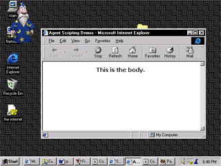
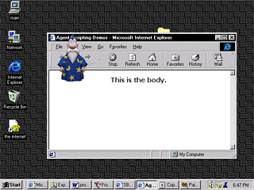
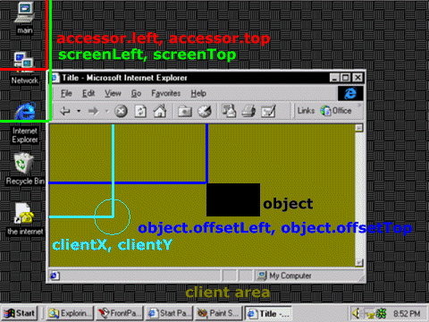
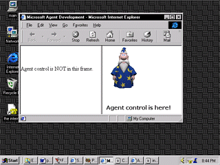
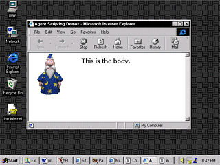
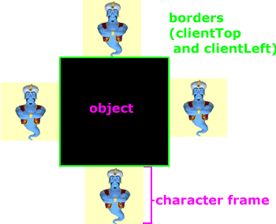

|
| ||
|
| ||
August 21, 1998
Contents
Introduction
Positioning in the Web Browser
Object Locations
Movement Relative to Objects
Compensate for User Adjustments
More Accurate Gesturing
Conclusion
In this article, I will use Microsoft® Agent character placement to illustrate screen positioning of objects in Internet Explorer 4.0 and 5.0. If you're not familiar with it, Microsoft Agent lets you embed an animated character (agent) into a Web page or a standard application. You can program Microsoft Agent from any language that supports ActiveX® technology, including Java, C++, Visual Basic®, Visual Basic Scripting Edition (VBScript), and JavaScript. You can also program a character to respond to events like the loading of a browser window or user input, including mouse and voice input. In addition, you can make a character move around within programs or Web pages, point to objects, and explain program features.
This article describes effective character positioning and gesturing in the Web browser. Developers for Internet Explorer 4.0 will also find it useful because window positioning is explained, along with a few new Internet Explorer 5 properties, and you can apply these properties to all kinds of objects. Be sure to check the Microsoft Agent site and its reference documentation at some point, especially if you are not sure how to load and show characters. For more information on objects, methods, and Internet Explorer positioning properties, see the DHTML References in MSDN Online 's Workshop.
On your Web site, you will probably need to position a Microsoft Agent character relative to either the browser window's position or an object on a document. With Internet Explorer 4.0 and later, there are a number of ways to calculate the exact position a character should move to. If you need a character to move to the location of a particular object independent of a user's clicking, you will need to create code that detects the exact positon of that object. We can calculate an object's position when the window loads and dynamically update it when necessary. Or, we can simply calculate the position "on-the-fly" just before we need to do some character moving.
When developing Web-based applications (or simple Web sites), you may experience difficulty in correctly positioning a character relative to a frame of content in the browser window. If you want a character to move to a set of coordinates in relation to Internet Explorer's window position, you need to use coordinate values other than the default X, Y integers (denoting pixel screen coordinates) used in the Microsoft Agent MoveTo method.
In Internet Explorer version 3.02, security fixes included the removal of the Explorer object. Without the Explorer object, there was no way to get the pixel distance from the top-left screen point to the browser window's top-left coordinate. However, the Explorer Property Component, an ActiveX control, gives us that ability. Unfortunately, different versions of Internet Explorer return different values for the window position properties when used in different situations.
The difference between using the normal MoveTo method coordinate system (screen positioning with the origin being the upper-left screen point) and using properties of the Explorer Property Component ActiveX control on a frameless page is apparent in these examples:
 |
 |
| Merlin.MoveTo 0,0 | Merlin.MoveTo Acc.Left, Acc.Top |
Figure 1. Difference in positioning results
Using the MoveTo method alone moves a character to the upper-left edge of the screen, while using the Property Component's default values for Left and Top moves a character to the upper-left edge of the frameless browser window.
When you use the Property Component on a page that is within a frameset (that is, a page within frames), the Left and Top properties return different values depending on the version of Internet Explorer you are using. Also, users can configure their browser to include or not include certain toolbars and arrange them in various orders. In Internet Explorer 3.0, we could change the display of toolbars on-the-fly (via the Explorer object), but because we can no longer do so, toolbar positioning adds another complication to what we want to achieve. These variations make it difficult to accurately move a character to specific locations in most browser versions without complex scripting to provide options for each scenario. Fortunately, our positioning problem becomes obsolete in Internet Explorer 5, and with a bit more coding it is obsolete in Internet Explorer 4.0 as well.
If you are interested in using the Property Component (Accessor Control), employ the following <OBJECT> tag:
<object id="Acc" classid="clsid:354154AE-9BFE-11D0-A6D0-00AA00A70FC2 " codebase="http://activex.microsoft.com/controls/iex plorer/x86/iwebacc.dll" width="0" height="0"> </object>
Use of the control in any version of Internet Explorer later than 3.02 is not recommended as there are more appropriate techniques for those versions (discussed later).
In Figure 2 below, you can see what various terms refer to pictorially. Note how the Explorer Property Component values (accessor.left, accessor.top) are still far from what we would like to use as an origin. The Internet Explorer 5 window properties screenLeft and screenTop tell us how far a browser client area is from the screen origin. A browser client area exists for each window object. In other words, when a frameless page shows, one browser client area exists. When framed pages show, each frame is a separate client area. Think of the browser client area as a content viewing area. The cyan text clientX (abbreviated) and clientY (abbreviated) refers to the coordinates of a window event, relative to screenLeft, screenTop. The blue text shows the offset properties for the arbitrary object, relative to the current client area.
Note: The golden text, "client area," refers to the golden area in the picture -- not the desktop. Also note that clientX, clientY, and object offset properties listed do apply for Internet Explorer 4.0 and later.

Figure 2. Explorer Property Component values and Internet Explorer 5 window properties
In Internet Explorer 4.0, we can manually calculate values equal to the screenLeft and screenTop values.
If you view the Positioning Demo, you will see that screenY minus clientY (abbreviated) is the same as the screenTop property value. If you are running Internet Explorer 5, you will obtain values from the real screenLeft and screenTop properties. For Internet Explorer 4.0, you will get "dummy" values calculated as shown in the chart below. So we could use either side of the following code table to determine the coordinates of the upper-left point of a browser client area. Note that you will need to capture a window event to calculate the values if you use the Internet Explorer 4.0 method. This is explained further in Compensate for User Adjustments.
| Internet Explorer 5 only | Internet Explorer 4.0 and later | |
| window.screenLeft | = | window.event.screenX - window.event.clientX |
| window.screenTop | = | window.event.screenY - window.event.clientY |
With Internet Explorer 4.0 and later, you get amazing control over where you can move your character, and you don't need to use ActiveX controls to do it. And with Internet Explorer 5.0, you can use a bit less coding to achieve the same results. As you can see in the images below, you can very easily move the character to the upper-left coordinates of a content viewing area, whether that area is a framed page or a frameless page. You can then create and set a new variable equal to those coordinates plus some positive or negative integer, to move a character exactly where you need it.
| Merlin.MoveTo ScreenLeft, ScreenTop | |
 |
 |
| Frames | No Frames |
Figure 3. Comparison of positioning in frames and not in frames
In the Positioning Demo, a script detects the browser version with a function named msieversion() and provides different scripting for versions 4.0 and 5.0 of Internet Explorer. (Please note that to view the Positioning Demo, you need to use Internet Explorer 4.0 or 5.0.) On your page(s), you may want to use only one technique, so both are obviously not necessary under normal circumstances. I, however, wanted to illustrate the identical results obtained using either technique.
If ( msieversion() >= 5 ) Then scLeft = window.screenLeft 'or simply, screenLeft scTop = window.screenTop 'or simply, screenTop ElseIf ( msieversion() = 4 ) Then scLeft = window.event.screenX - window.event.clientX scTop = window.event.screenY - window.event.clientY End if
Note: We can omit "window" from window.ScreenLeft and window.ScreenTop and achieve the same result when the coding is within the same window whose properties we need to access.
It is quite useful to determine the exact location of objects within a form or page. This lets you coordinate a character's position with an object's.
For Web browsers, you can get the location relative to the browser client. Find the top, left coordinates of the client area. For Internet Explorer 5.0, we can use window.screenLeft and window.screenTop, but for Internet Explorer 4.0 we would need to use equivalent coding, as explained in the previous section. Then add the distances from that point to the top, left coordinates on the object. We find these other values by accessing the offsetLeft and offsetTop properties of the object.
If we have an object on one page with no other containers, the code to get the coordinates of the object (excluding borders) when an event occurs could look like the following:
objectpositionX = (window.event.screenX - window.event.clientX) + object.offsetLeft objectpositionY = (window.event.screenY - window.event.clientY) + object.offsetTop
ObjectpositionX and objectpositionY are simply variable names we created. Object, however, refers to the ID of the object whose coordinates we want to learn.
Note that offsetLeft or offsetTop refer to the positioning of an object relative to its parent container -- which is not necessarily the window itself. The parent object could be a table, in which case you would need to use the offsetParent property to access the parent item, then access the parent's position properties and tabulate all of the values. We would need to go "up the chain" until we get to the document body.
Set Pele = OldObject
Do Until Pele.TagName = "BODY"
Set Pele =
Pele.offsetParent
ExtrasX = ExtrasX +
Pele.offsetLeft + Pele.ClientLeft
ExtrasY = ExtrasY +
Pele.offsetTop + Pele.ClientTop
Loop 'accumulate values for parents' offsets and
borders
Most character frames have a dimension of 128 x 128 pixels. Even if a character has not been compiled to those dimensions, you shouldn't worry. You can still use the following suggestions, because we are not actually assuming the dimensions are 128 x 128 pixels. Instead, we find the value by accessing the character's width and height properties. It's probably most useful to place a character in a centered position to the immediate left, right, top, or bottom of an object (see Figure 4).

Figure 4. Positioning to the immediate right, left, top, or bottom of an object, and centered
The following chart shows you how to place a character in a centered position to the immediate left, right, top, or bottom of an object. Keep in mind that the listings in the chart below assume you have already calculated the screen coordinates of the object's upper-left point. From that point, you need to either add or subtract the property values listed in the table. Also, CharHeight refers to a character's height, and CharWidth refers to a character's width. If you don't know how to access those properties, you will need to check a Microsoft Agent resource that explains how. Web developers and anyone else using the Agent control should check Programming the Control documentation on the Microsoft Agent Web site. Application developers using the Agent Server interface should check Programming the Server Interface.
|
Centering Corrections |
||
|
Position |
To the Object's X coordinate: | To the Object's Y coordinate: |
| Right, center | + objectwidth + object.clientLeft | + (objectheight/2) - (CharHeight /2) |
| Top, center | + (objectwidth / 2) - (CharWidth /2) | - CharHeight - object.clientTop |
| Left, center | - CharWidth - object.clientLeft | + (objectheight/2) - (CharHeight /2) |
| Bottom, center | + (objectwidth / 2) - (CharWidth /2) | + objectheight + object.clientTop |
To move a character to a location within the bounds of an object horizontally and vertically, just start with the object's position and add the distances you want to move it. Note that this method requires you to specify the width and height properties of the object relative to which you will be positioning the character, and get the height and width in code later.
Because you might not necessarily use an OBJECT element, generic Width and Height properties may not be supported. For example, you might be using a SPAN element. I have succesfully used the pixelHeight and pixelWidth properties in personal pages of my own, so you may find it useful to do the same.
Be sure to account for window resizing, moving, or document scrolling. You can't assume that an item your character is supposed to point to will remain in the same location no matter what the user does -- you'll leave users confused when the character points to and talks about an item that is not where the character is pointing. Users could scroll a document, move the window, or resize the window. You need to account for each scenario and adjust the coordinates accordingly.
Or you may choose to simply calculate the coordinates of an object just before moving or pointing to it. When the document is moved during a sequence, the coordinate corrections are made the next time coordinates are calculated. So any large need to dynamically adjust coordinates is eliminated.
For Internet Explorer 4.0, we need to use a window event to manually calculate our values. Getting values equal to the Internet Explorer 5 properties, screenLeft and screenTop, in Internet Explorer 4.0 requires "creating" an event for more precise calculation. Fortunately, we can simulate an event with object.click.
When we get an object's coordinates "on-the-fly," we simulate the click event for an item that might not be displayed. Within a code block further below, I specified a non-displayed item instead of simulating a click for an already used and visible object. If you have a displayed object on your page, you may find it more efficient to simulate a click for it instead of inserting a new and invisible object. For the onclick event of whatever item you choose to use, we can update the magic values, still leaving us with very lean and efficient coding.
After defining the global variables, FakeScreenLeft and FakeScreenTop, we can have:
sub marq_onclick update() end sub
sub update() FakeScreenLeft = window.event.screenX - window.event.clientX FakeScreenTop = window.event.screenY - window.event.clientY end sub
where marq is the ID of the object clicked. We would use marq.click for the click simulation just before moving a character.
As a larger example, we could have a Microsoft Agent control named "Agent" inserted on a page. If we had an object (img1) that we wanted to position a character near, we could use code similar to the following:
<script language="VBScript"> Dim Genie, eleX, eleY, FakeScreenLeft, FakeScreenTop
Sub window_onload Agent.Connected = True Agent.Characters.Load "Genie","C:\test\genie.acs" Set Genie = Agent.Characters("Genie") findcoordinates(img1) Genie.MoveTo (eleX - 125), (eleY - 30) End Sub
Sub img1_onclick update() End Sub
Sub update() FakeScreenLeft = window.event.screenX - window.event.clientX FakeScreenTop = window.event.screenY - window.event.clientY End Sub
Function FindCoordinates(ByVal ele) img1.click Dim ExtrasX, ExtrasY, Pele Set Pele = ele Do Until Pele.TagName = "BODY" Set Pele = Pele.offsetParent ExtrasX = ExtrasX + Pele.offsetLeft + Pele.ClientLeft ExtrasY = ExtrasY + Pele.offsetTop + Pele.ClientTop Loop eleX = FakeScreenLeft + ele.clientLeft + ele.offsetLeft - document.body.scrollLeft + ExtrasX eleY = FakeScreenTop + ele.clientTop + ele.offsetTop - document.body.scrollTop + ExtrasY End Function </script>
You may use the GestureAt method to make a character gesture at specific coordinates. For Visual Basic or VBScript, it's as simple as:
AgentX.Characters("CharacterID").GestureAt X, Y
The coordinate system is the same as the MoveTo method, but do note that the GestureAt method will only show a gesturing animation; it will not move a character. While it may automatically play the correct gesturing animation, you will not easily know which it is. So, it would be difficult to accurately have a character describe an object by saying something like, "In the textbox below..." Secondly, using the GestureAt method will not correctly align a pointing finger exactly perpendicular to the object it should point to. Instead, it will only point up, left, right, or down. When we have small, fine objects that need to be explained, establishing a very precise pointing technique is crucial. Because we will still need to move a character with the MoveTo method, you might find it easier to simply adjust the values used in a MoveTo method and use a generic gesturing animation (up, down, left, or right) afterwards. These adjustments could easily be placed into a new function similar to the following:
Sub moveToLeft(ByVal X) FindCoordinates X 'finds coordinates of the object ID referred to as X Genie.MoveTo positionLeftX, positionLeftY Genie.Play "GestureLeft" Genie.Speak "I can point from the left." End Sub
For a gesturing-up animation, you might use:
AgentX.Characters("CharacterID").Play "GestureUp"
In the above demonstrations, we have positioned the character in a centered position just next to objects. However, you will notice that for some characters, when a gesture left, right, up, or down animation is played, the pointing hand does not align itself exactly to the center of the character's side. So, if we want to focus our attention on creating more precise pointing, we need to make a few adjustments to the positioning procedure.
We must account for the difference between the middle of the character and the pointing finger when extended. To get correction values for gesturing, obtain the pixel distance from the center (of the side you are about to correct) to the edge of the pointing finger. For the Genie character, here are some practical values you may use:
| Modifications to the Centered X, Y Positions in the Previous Table | ||
| add to X: | add to Y: | |
| Top | + 23 | |
| Left | + 40 | |
| Right | + 40 | |
| Bottom | + 23 | |
The previously discussed centering corrections are best used when we want to explicitly make a character move to a particular side of an object, point correctly at the object's side, and perform other actions. At times, you may find it more relevant to use the GestureAt method.
Using standard values for the Microsoft Agent MoveTo method will not give you the most effective character positioning or gesturing possible. But with a little scripting and knowledge of Internet Explorer's positioning properties, you can create much more useful Microsoft Agent presentations, and more precisely position other kinds of objects in the browser and desktop.
For further reading on positioning, see these articles in the Web Workshop:
Measuring Element Dimension and Location
Nathan Dickerson has extensive experience in developing Agent applications as well as Web applications using the latest Web technologies. He is currently producing Learning Microsoft Agent, an interactive training resource for Microsoft Agent development, character creation, and related topics.
Did you find this material useful? Gripes? Compliments? Suggestions for other articles? Write us!
© 1999 Microsoft Corporation. All rights reserved. Terms of use.